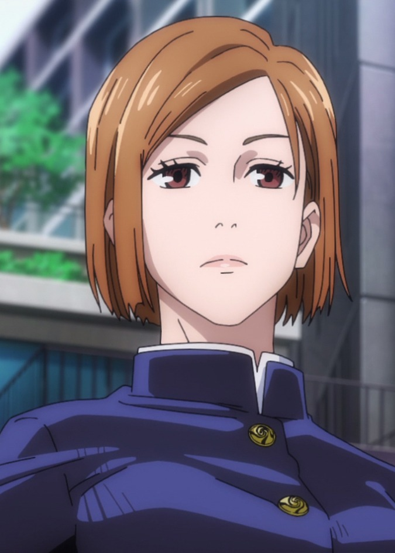
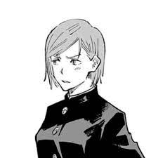
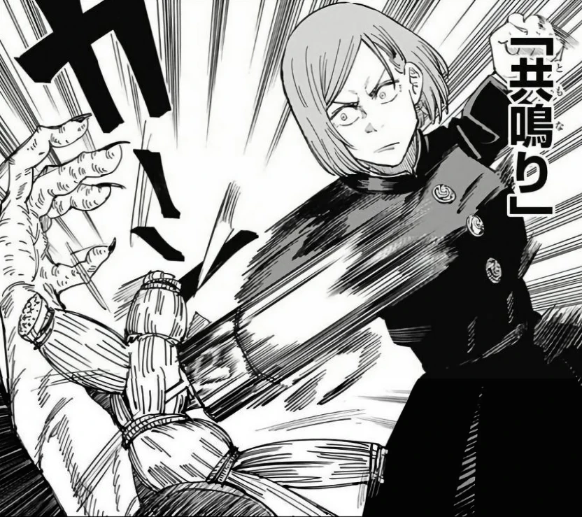
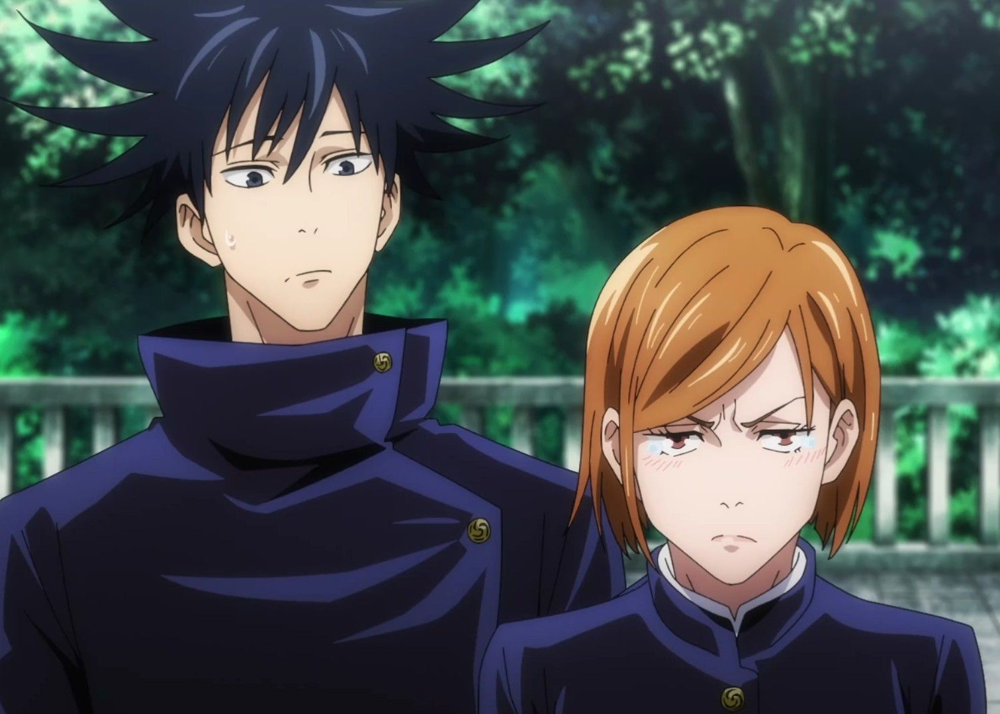

¿Quien es?
Maki Zenin (禪院真希 Zen'in Maki?) es uno de los personajes de la serie manga Tokyo Metropolitan Curse Technical School y su serie secuela, Jujutsu Kaisen. Es una estudiante de segundo año del Colegio Técnico de Magia Metropolitana de Tokio. Forma parte de la familia principal del Clan Zenin, una de los tres clanes de élite de los chamanes y es hermana gemela de Mai Zenin.
Apariencia
|

Imagen de Maki |
Maki es una adolescente delgada y de estatura alta, llegando a medir 170 centímetros. Su cabello es negro y completamente liso; durante su primer año en el Colegio de Tokio, llevaba una cola de caballo y flequillo hacia un costado, a partir de su segundo año, lleva la misma cola de caballo pero con un flequillo recto. Usa un par de anteojos que contienen energía maldita que le permiten ver las maldiciones. En el anime, su cabello es representado de un color negro verdoso y ojos marrones.
Tras recibir un ataque de fuego por parte de Jogo durante el Arco de El Incidente de Shibuya, Maki quedó con visibles quemaduras tanto en su rostro como en ambos brazos, su pelo ahora se extiende hasta su mentón y lleva un parche en el ojo derecho. Ahora usa unas gafas redondas, ahora su uniforme escolar consiste en una chaqueta oscuras de mangas largas y abiertas con los característicos botones del Colegio Técnico de Magia Metropolitana de Tokio, debajo usa una musculosa ceñida, y unos pantalones de tiro alto de color oscuro, un cinturón de color claro los sujeta y usa unos zapatos oscuros.
Su vestimenta característica consiste en su propia versión del uniforme del Colegio Técnico de Magia Metropolitana de Tokio. Utiliza una chaqueta negra de manga larga, falda, medias y zapatos negros; en el anime, su uniforme completo es representado en color azul marino.
En sus tiempos de entrenamiento, viste una camiseta negra con puños, cuello y borde inferior color oscuro, pantalones cortos de color oscuro sobre pantalones negros y zapatos blancos. Mientras entrenaba a Yuta Okkotsu, vestía la misma camiseta, pantalones cortos negros, calcetines negros y zapatos blancos.
Su ropa casual consiste en una sudadera con capucha blanca sobre una camisa horizontal negra y blanca, pantalones cortos blancos sobre pantalones negros y botas blancas.
Cuando era niña, tenía flequillo negro y su cabello llegaba hasta su mentón, usaba un kimono de color oscuro con una faja negra. Cuando dejó el Clan Zenin, vestía una yukata en tonos claros y una hakama negra.
Personalidad

Nobara animada |
Como miembro de la familia principal del Clan Zenin, se esperaba que contará con la habilidad de poder heredar la técnica que se transmite por generación dentro del clan, sin embargo, nació sin la habilidad de poder hacer uso de la energía maldita, lo que le impide poseer una técnica innata. Ante su carencia de poder, estuvo destinada a convertirse en una simple sirvienta para el resto de su familia. A pesar de las circunstancias que la rodeaban, deseaba convertirse en una persona extremadamente fuerte, por lo que decidió abandonar el clan con el fin de lograr su cometido. Antes de irse, declaró que volvería nuevamente para ser la siguiente en dirigir a la familia.
Dado que es considerada un fracaso del clan, creció con dicha idea en mente y se considera a sí misma alguien de 'clase baja'. Con el fin de demostrarle a todos aquellos que estaban equivocados, se esfuerza al máximo y persigue el deseo de convertirse en alguien fuerte para poder demostrar, a su vez, que es mejor que ellos.
Durante su primer año en el Colegio Técnico de Magia Metropolitana de Tokio, solía ser una joven un tanto amargada, directa y con mal genio. Debido a su manera brusca de actuar, tenía bastante problemas para poder abrirse con el resto de las personas y, cuando sentía que podía llegar a ser aceptada por otros, era demasiado dura consigo misma e intentaba rechazar fuertemente la amabilidad de quienes la rodeaban. A partir de su segundo año, se convierte en una persona mucho más pasiva, amable y empática con el resto de sus compañeros.
Habilidades
| Habilidad | Descripción | Imagen |
|---|---|---|
| No posee energía maldita | Desde su nacimiento se vio sometida a la Maldición Celestial volviéndose incapaz de hacer uso de la energía maldita, sin embargo, obtuvo una fuerza, velocidad y resistencia sobrehumana |  |
| Gafas | Con el fin de poder ejercer su trabajo como chamán, hace uso de un par de gafas que le permiten ver todo tipo de espíritu maldito así como también, ser capaz de presentir la energía maldita de otros |
Imagenes de Nobara

Apariencia de Nobara (Anime) |
|

Apariencia de Nobara (Manga) |

Nobara usando su técnica maldita (Resonancia) |
|

Muñeco vudu que Nobara usa para su tecnica |

Nobara con Itadori |
|

Nobara con Megumi |